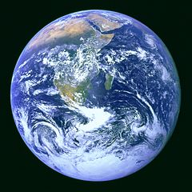

Elon Musk: The man who sent his sports car into space
By Joel Gunter - BBC News
February 2018

The Falcon Heavy's boosters burned for 154 seconds before they jettisoned into space. Free from the main body of the rocket, they spun 180 degrees and arced back towards the earth, burning their engines again as they descended to Cape Canaveral, to land, smoothly, improbably upright, within a second of one other.
Meanwhile, the main rocket pushed on, preparing to bring the world an even less credible sight. Four minutes into the flight, the nose cone broke apart to reveal its payload: a cherry-red electric sports car, with the top down, in space - a PR stunt for the ages.
It was all brought to you by Elon Musk, the South African-born billionaire entrepreneur and founder of Paypal, electric car company Tesla, and SpaceX, the manufacturer of the Falcon Heavy. The partly-reusable Heavy is the most powerful rocket on earth, and, if Mr Musk is to be believed, a stepping stone to a rocket to Mars.
The sports car in the nosecone was one of Mr Musk's own Tesla Roadsters. Its stereo was programmed to play David Bowie's Space Oddity on repeat as it travels for millions of years through space. Or until the battery dies, anyway. "It's kind of silly and fun," he conceded, "but silly and fun things are important."
In the 12 years since Mr Musk sold online payments firm Paypal for $1.5bn, he has evolved in the public imagination into a kind of mad genius figure - part industrialist, part scientist, part playboy, part superhero. He has dated and married famous actresses, including Talulah Riley and Amber Heard, and had a rumoured fling with Cameron Diaz. Robert Downey Jr took inspiration from him to play Tony Stark in Iron Man.
He has cornered private space flight and the electric car industry, ventured into solar energy and artificial intelligence, and promised super-high speed magnetic train travel, in a tube, underground. Oh, and he plans to colonise Mars.
Most take Mr Musk's more wild ambitions and boasts with a galaxy-sized pinch of salt. His companies have missed deadline after deadline and recorded massive losses. But climate change campaigners have hailed the unexpected popularity of Tesla's electric cars, and the launch of the Falcon Heavy capped a string of successes for SpaceX.
It all began in Pretoria, South Africa. As a young boy, he was obsessed with science fiction novels and more or less anything you could run a current through. His parents, Maye, a model, and Errol, an engineer, separated when he was eight. His younger brother and sister would stay with their mother, so he volunteered to go with their father. It did not go well. He later recalled returning home after vicious bullying at school, "and it would just be awful there as well".
At 17, he moved to Canada to study physics and economics at Ontario's Queen's University. From Canada he migrated to the US in 1992, transferring to the University of Pennsylvania, and from Pennsylvania to a PhD in energy physics at Stanford in California, After two days, he quit.
Instead he founded Zip2, an online newspaper platform, with his younger brother Kimbal. In 1999 they sold the company to Compaq for $300m, and Mr Musk ploughed his share into an online bank, X.com. X.com became Paypal, and in 2002 Paypal sold to eBay for $1.5bn. Aged 31, Mr Musk netted $165m.